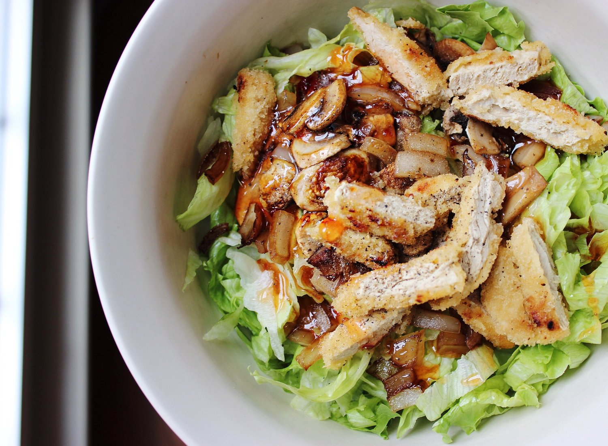

Vegan Asian Chicken Salad


Vegan asian chicken salad say what?!? I love how I was just saying on Youtube how I rarely get fake meat...and then this happens ha. haha. oh ok sure Kim ok we believe you.
But seriously this is so good. After I made the "vegan alternatives" video I got curious and found soy "chicken" tenders in the frozen foods section..and oh my gosh. They are fantastic. They crisp on the outside so irresistibly well. This salad is simple, 5 ingredients only, but the flavors combine to make such a wonderful salad! I could eat 3 more bowls of this, if my stomach wasn't nearly at capacity.
It's so weird because when I was in my "dieting phase" I ate SO many salads. I was buying 2 heads of lettuce a week. But now I rarely do. I just find it hard to have fully raw meals; I never want them even if I try to make myself want them. Does that even make sense? Ha. BUT when I add cooked foods & veggies to a salad...I go hard on salads. They're just so powerful. Now I'm sad because I'm out of lettuce and can't make another tomorrow. :( Make one in my honor please?
Vegan Asian Chicken Salad
Serves: 1
-
1 small head of lettuce
-
3 oz mushrooms, sliced
-
2 oz onion, diced
-
2 soy "chicken" tenders
-
2 TBSP sweet chili sauce
-
First, prepare the soy chicken tenders are instructed on the package. Mine say to bake for 20 minutes.
-
While that is baking, sautee your mushrooms and onions in a pan sprayed with nonstick spray.
-
While the vegetables are cooking down, cut your lettuce into shreds, wash, and toss into a medium/large bowl. Once the veggies are cooked, add to the bowl. Once the chicken tenders are baked and crispy, cut into strips and add to the bowl.
-
Top the salad with sweet chili sauce as your dressing. Add salt & pepper if desired, and enjoy!